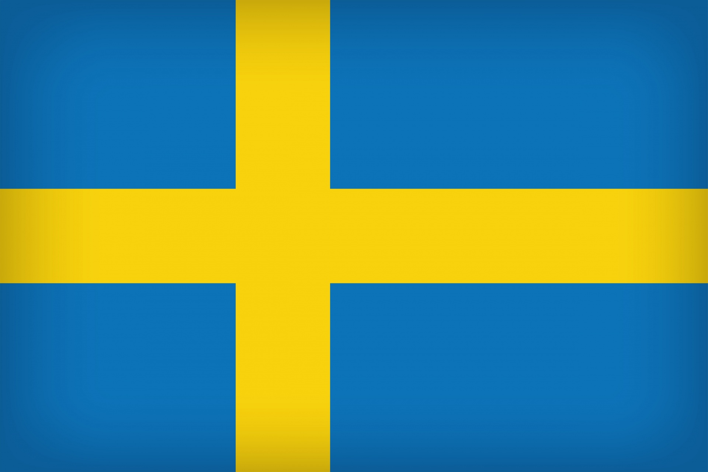
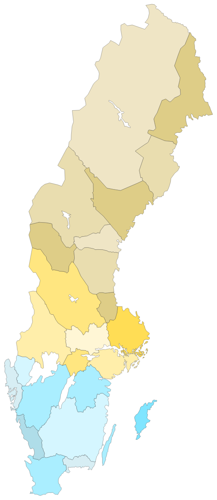

Table of Contents
Quick Facts of Sweden
| Capital: Stockholm |
| Population: Approximately 10,5 million |
| Language: Swedish |
| Government: Constitutional Monarchy |
| Currency: Swedish Krona (SEK) |
| Islands: 267,570 |
Land of the Four Seasons
Sweden's climate and landscape change dramatically throughout the year. The country stretches from open farmland in the south to arctic mountains in the north. In the summer you can experience the famous midnight sun, while winter offers snowy landscapes and the magical Northern Lights.
The Swedish Way of Life
Swedish culture is closely tied to nature and balance. Through the unique right called "Allemansrätten" (The right to roam), everyone is free to explore the outdoors responsibly. Another essential tradition is fika - taking a coffee break with pastries to relax and connect with others.


Explore the Country
Use the navigation menu above to discover more about Sweden.